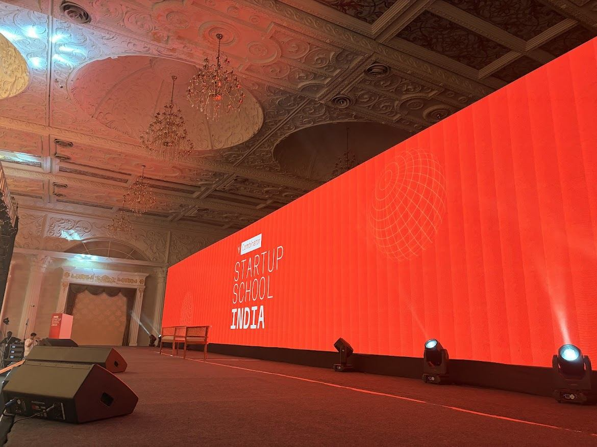
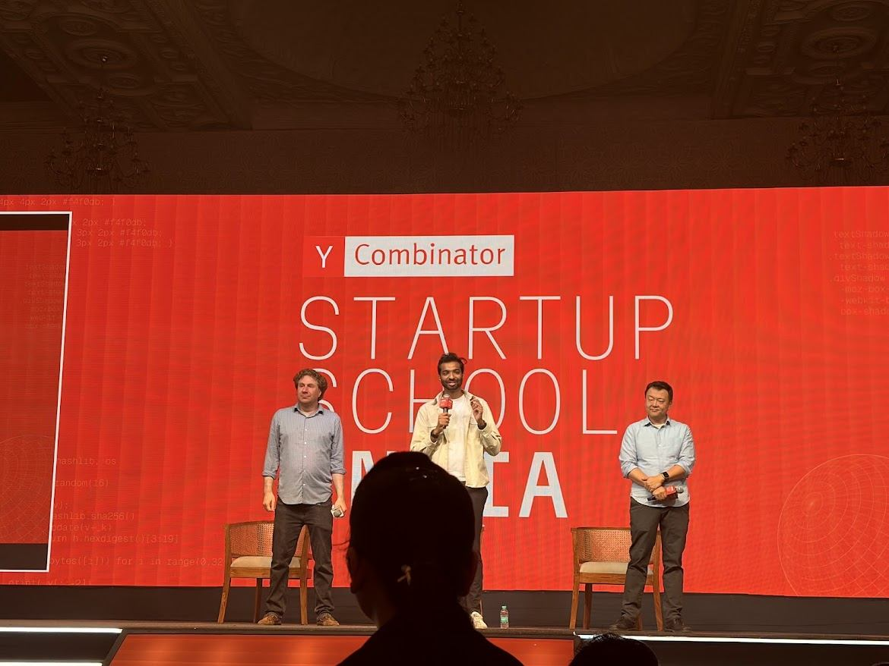
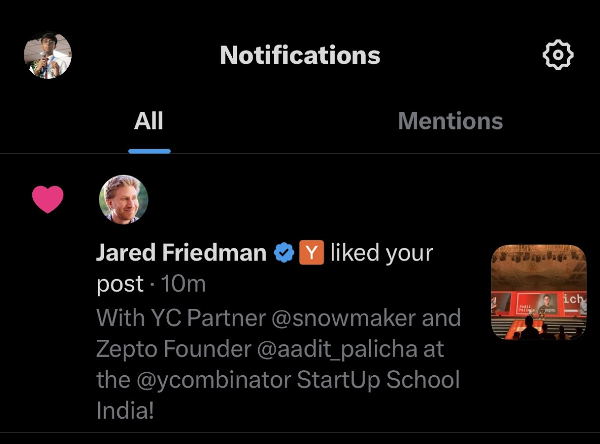
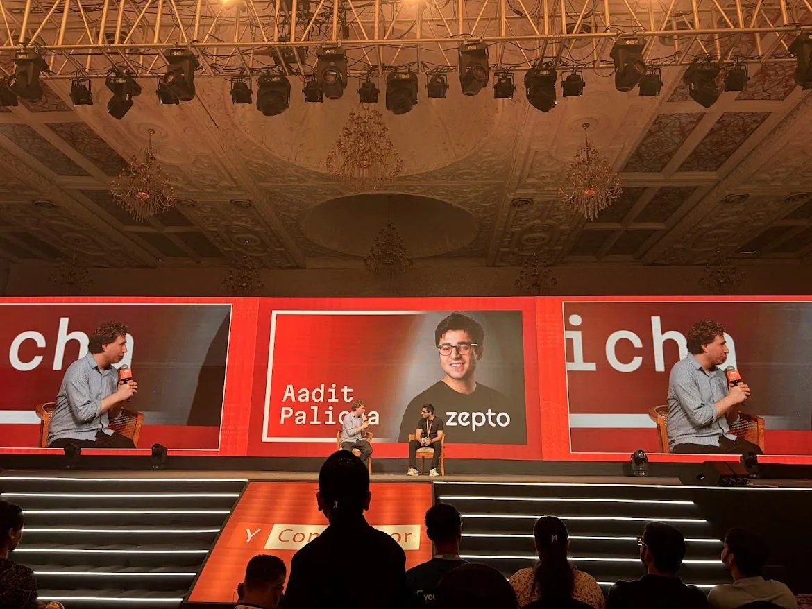
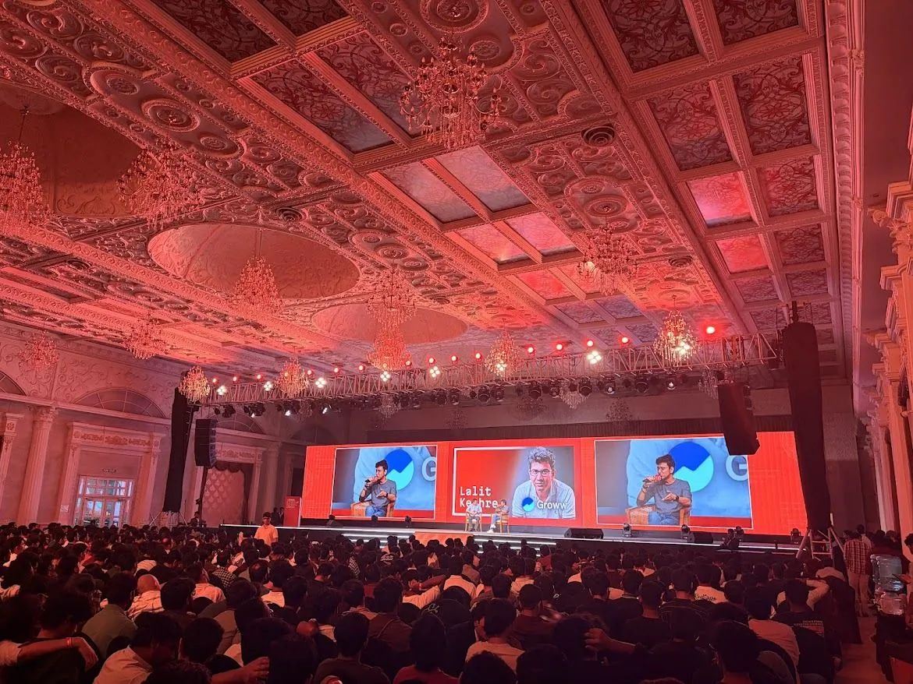
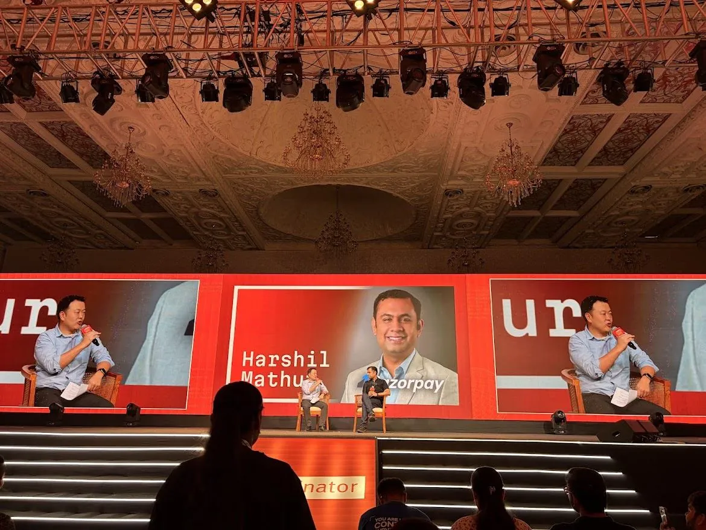
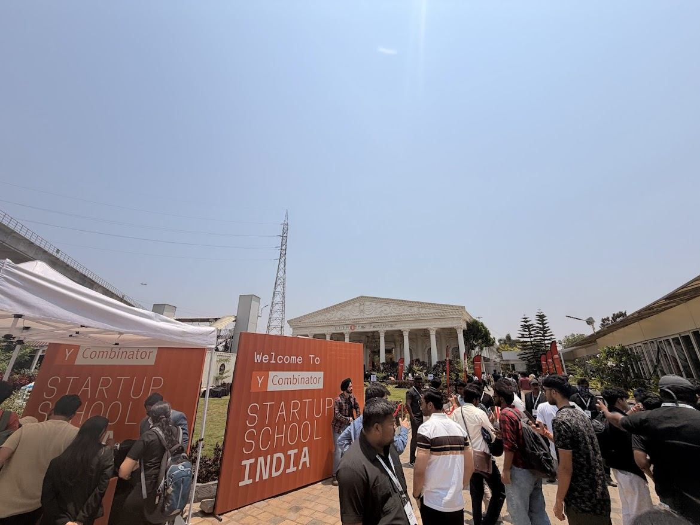

Bengaluru · 18 April 2026
Y Combinator, Startup School India
C's first physical event in India — one of ~2,000 founders selected, a $25K+ AI grant, and a pitch to Jared Friedman.

- ≈8% acceptance rate
- 2,000 founders & builders
- $25K+ AI grant received
- the first YC event ever in India
what it was
In April 2026, Y Combinator held its first-ever physical event in India: the YC Startup School India in Bengaluru. 2,000 of the country's top founders, engineers, and builders were selected through a competitive application process with an acceptance rate of around 8%. I was one of them.
The event brought together three YC General Partners, Jared Friedman, Ankit Gupta, and Jon Xu, alongside some of India's most successful YC-backed founders. The timing was deliberate: the YC Summer 2026 batch application deadline was just 16 days later.

the grant
every student accepted into Startup School India received $25,000+ in AI and cloud credits from Y Combinator, announced by YC on X just weeks before the event. I received this grant, which went directly toward building my financial literacy initiatives.
pitching to Jared Friedman
One of the defining moments of the day was getting to pitch my financial literacy initiative directly to Jared Friedman, YC's Managing Director. Distilling years of work in Edunomix, FinKid, and TaxCity into a conversation with someone who has evaluated thousands of startups was invaluable. Jared also liked my post on X about the event.

speakers
The lineup was a who's who of India's most consequential founders, all YC alumni:
- Aadit PalichaCo-founder & CEO, Zepto
- Harshil MathurCo-founder & CEO, Razorpay
- Lalit KeshreCo-founder & CEO, Groww
- Vidit AatreyCo-founder & CEO, Meesho
- Jared FriedmanManaging Director, Y Combinator
- Ankit GuptaGeneral Partner, Y Combinator
- Jon XuGeneral Partner, Y Combinator




the people
Beyond the sessions and speakers, what made the day truly memorable was the quality of people in the room. Being surrounded by 2,000 of India's most ambitious builders, people working on everything from AI infrastructure to consumer fintech, was energising in a way that's hard to describe. I left with connections from across the country and beyond, many of whom I'm still in touch with.
Getting to meet Vidit Aatrey (Meesho) in person, a founder who built one of India's most impactful e-commerce platforms, was a highlight I didn't anticipate.
takeaway
Startup School India was a signal that India is no longer a market YC watches from a distance, but one it's actively investing in and showing up for. Being in that room, at the age of only 17 (one of the youngest people present), with a grant in hand and a pitch to Jared, felt like a confirmation that the work I've been doing matters.